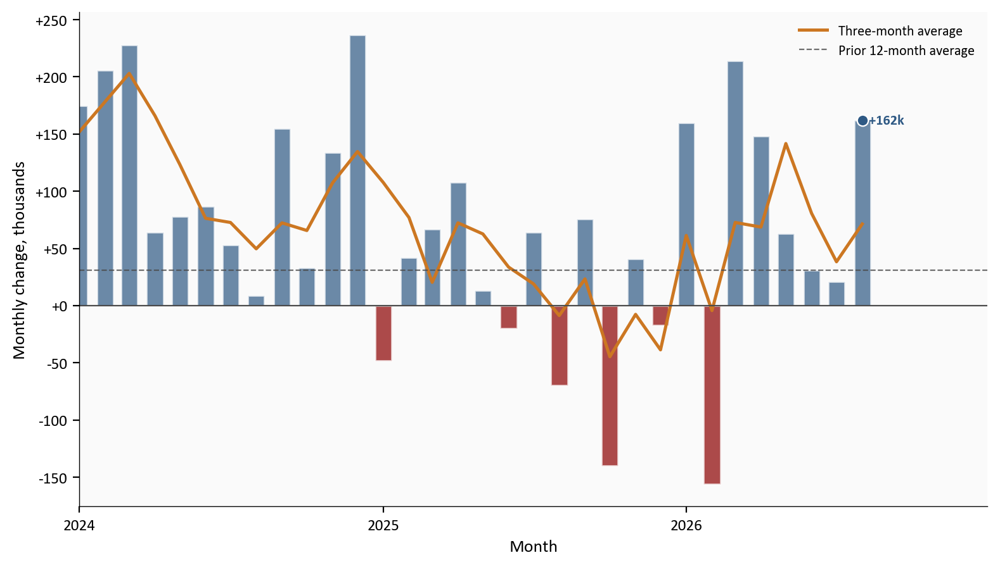
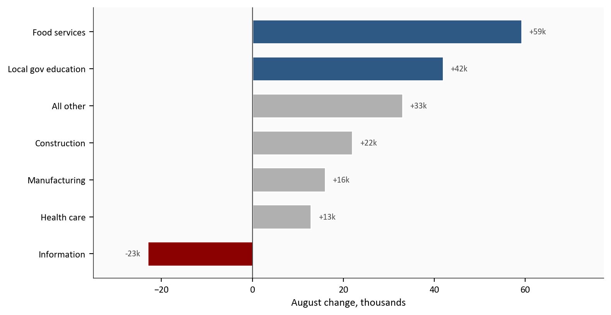
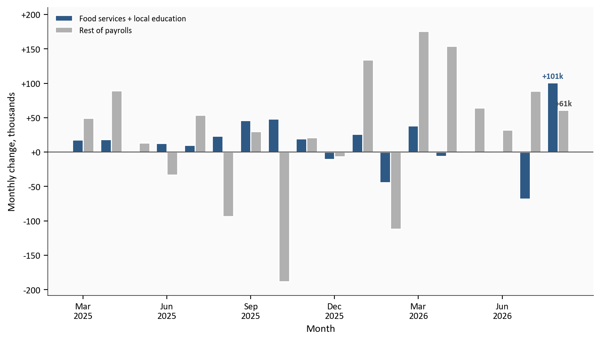
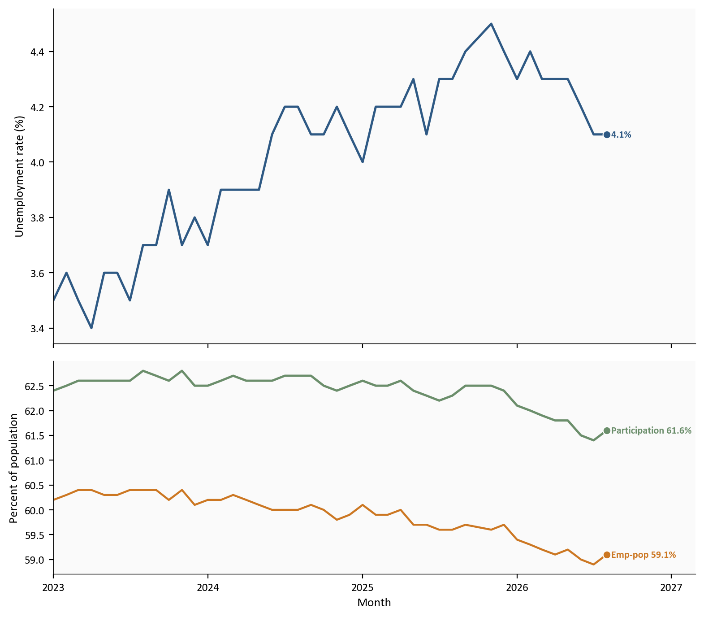
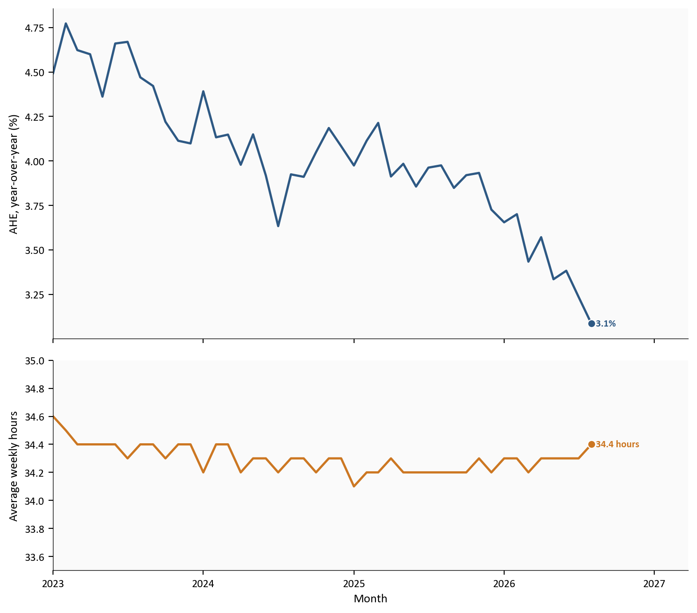

Nonfarm payrolls
+162k
Aug 2026
Food services + local education
62.3%
share of the gain
Unemployment rate
4.1%
unchanged
Average hourly earnings
3.1%
year-over-year
BLS Employment Situation via FRED | 9/4/2026 | August 2026
Yoram Gilboa
September 4, 2026
The August jobs report was a beat, not a boom. Nonfarm payrolls rose +162k, against a Wall Street Journal survey of economists at +53k and a prior-12-month average of +31k. The Bureau of Labor Statistics also revised June and July up by a combined +55k, so July’s first-print scare is smaller than it looked.
The catch is composition. Food services and drinking places plus local government education supplied 62.3% of the monthly gain. Average hourly earnings rose 0.3% on the month and 3.1% over the year. That is a labor market that hired in restaurants and schools after a weak July - not one that suddenly tightened heading into the 9/16 FOMC.
BLS Employment Situation via FRED | 9/4/2026 | August 2026
Establishment payrolls and the household survey are separate samples. JOLTS (Job Openings and Labor Turnover Survey) and claims in this post are lagged and prose-only.
Total nonfarm payrolls rose +162k in August. Private payrolls rose +127k and government added +35k. That is a step up from the first July print of -23k, which BLS later revised to +21k.
The revision math matters as much as the new month. June moved from +20k to +31k. July moved up by +44k. Together those two months are +55k stronger than first reported.
The prior 12-month average was +31k. The three-month average, which now includes August, is +71k. Hiring improved. The trend is still modest.
# Monthly payroll change comes from scripts/02_clean_data.py (this month's
# PAYEMS level minus last month's). The three-month line is a simple mean
# of those changes, not an annualized rate.
plot = labor.loc["2024-01-01":].copy()
bar_colors = np.where(plot["payems_chg"] >= 0, COLORS["primary"], COLORS["accent"])
fig, ax = plt.subplots(figsize=(8.0, 4.6))
ax.bar(plot.index, plot["payems_chg"], width=20, color=bar_colors, alpha=0.7, edgecolor="white")
ax.plot(
plot.index,
plot["payroll_3m_avg"],
color=COLORS["warning"],
linewidth=1.8,
label="Three-month average",
)
ax.axhline(0, color=COLORS["neutral"], linewidth=0.8)
ax.axhline(
stats["prior_12m_avg_k"],
color=COLORS["neutral"],
linestyle="--",
linewidth=0.8,
alpha=0.8,
label="Prior 12-month average",
)
last_date = plot.index[-1]
last_value = plot["payems_chg"].iloc[-1]
ax.scatter(
last_date,
last_value,
s=40,
color=COLORS["primary"],
zorder=5,
edgecolors="white",
linewidth=0.8,
)
ax.text(
last_date,
last_value,
f" {last_value:+.0f}k",
color=COLORS["primary"],
fontsize=8,
fontweight="bold",
va="center",
)
extend_xlim(ax, plot.index, 0.16)
ax.set_ylabel("Monthly change, thousands")
ax.set_xlabel("Month")
ax.xaxis.set_major_locator(mdates.YearLocator())
ax.xaxis.set_major_formatter(mdates.DateFormatter("%Y"))
ax.yaxis.set_major_formatter(ticker.FuncFormatter(lambda x, pos: f"{x:+.0f}"))
ax.legend(loc="upper right", frameon=False)
plt.tight_layout()
fig.savefig(IMG_DIR / "august-jobs-rebound.png", dpi=150, bbox_inches="tight")
The three-month average is still well below the early-2024 hiring pace on this chart.
Food services and drinking places added +59k jobs, versus a +12k average over the prior 12 months. Local government education added +42k, after -58k in July. Those two categories sum to +101k, or 62.3% of the +162k total.
Construction added +22k. Manufacturing added +16k and is up +58k since 12/2025. Health care added +13k, slower than its +32k prior-year pace. Information lost 23k jobs, worse than its -8k average over the prior 12 months. That cut is the white-collar side of the story: restaurants and schools hired, while computing, publishing, and broadcasting did not.
# August industry changes are first differences of CES levels from
# scripts/02_clean_data.py. "All other" is the residual after the listed
# industries, so the bars sum to the headline payroll change.
plot_sector = sector.sort_values("change_k")
highlight = {"Food services", "Local gov education"}
bar_colors = []
for industry, value in zip(plot_sector["industry"], plot_sector["change_k"]):
if value < 0:
bar_colors.append(COLORS["accent"])
elif industry in highlight:
bar_colors.append(COLORS["primary"])
else:
bar_colors.append(COLORS["light"])
fig, ax = plt.subplots(figsize=(8.0, 4.2))
ax.barh(
plot_sector["industry"],
plot_sector["change_k"],
color=bar_colors,
edgecolor="white",
height=0.65,
)
x_span = plot_sector["change_k"].max() - plot_sector["change_k"].min()
for industry, value in zip(plot_sector["industry"], plot_sector["change_k"]):
offset = 0.02 * x_span
if value >= 0:
ax.text(
value + offset,
industry,
f"+{value:.0f}k",
va="center",
fontsize=8,
color=COLORS["neutral"],
)
else:
ax.text(
value - offset,
industry,
f"{value:.0f}k",
va="center",
ha="right",
fontsize=8,
color=COLORS["neutral"],
)
ax.axvline(0, color=COLORS["neutral"], linewidth=0.8)
ax.set_xlabel("August change, thousands")
ax.set_xlim(plot_sector["change_k"].min() - 12, plot_sector["change_k"].max() + 18)
plt.tight_layout()
fig.savefig(IMG_DIR / "august-sector-mix.png", dpi=150, bbox_inches="tight")
Source: BLS CES via FRED, series CES7072200001, CES9093161101, USCONS, MANEMP, CES6562000101, USINFO, and PAYEMS.
Leisure and hospitality is the broader grouping that includes food services. It rose +62k, and food services accounted for 95.2% of that gain.
A one-month industry mix can be noise. The next check is whether food services plus local education, versus everything else, has been carrying recent payrolls. In August the two highlighted industries added +101k after -68k in July. The rest of payrolls added +61k, down from +89k in July.
That split is the reason the rebound can be real and still incomplete. The August bounce is a reversal in two concentrated industries, not a pickup in the rest of the economy. If restaurants and local school systems are doing the hiring, the print says less about factories, warehouses, professional services, and information than the headline suggests. Local education also has a seasonal fingerprint around the school year, even after seasonal adjustment, so one strong month there should not be read as a new public-sector boom.
# two_sector_chg is food services plus local government education.
# rest_chg is PAYEMS minus that sum. Both are built in 02_clean_data.py.
plot = labor.loc["2025-03-01":].copy()
x = np.arange(len(plot))
width = 0.38
fig, ax = plt.subplots(figsize=(8.0, 4.6))
ax.bar(
x - width / 2,
plot["two_sector_chg"],
width,
color=COLORS["primary"],
edgecolor="white",
label="Food services + local education",
)
ax.bar(
x + width / 2,
plot["rest_chg"],
width,
color=COLORS["light"],
edgecolor="white",
label="Rest of payrolls",
)
ax.axhline(0, color=COLORS["neutral"], linewidth=0.8)
last = len(plot) - 1
ax.text(
last - width / 2,
plot["two_sector_chg"].iloc[-1] + 6,
f"{plot['two_sector_chg'].iloc[-1]:+.0f}k",
ha="center",
fontsize=8,
color=COLORS["primary"],
fontweight="bold",
)
ax.text(
last + width / 2,
plot["rest_chg"].iloc[-1] + 6,
f"{plot['rest_chg'].iloc[-1]:+.0f}k",
ha="center",
fontsize=8,
color=COLORS["neutral"],
fontweight="bold",
)
tick_idx = list(range(0, len(plot), 3))
ax.set_xticks(tick_idx)
ax.set_xticklabels([d.strftime("%b\n%Y") for d in plot.index[tick_idx]])
ax.set_ylabel("Monthly change, thousands")
ax.set_xlabel("Month")
ax.yaxis.set_major_formatter(ticker.FuncFormatter(lambda v, pos: f"{v:+.0f}"))
y_min = min(plot["two_sector_chg"].min(), plot["rest_chg"].min())
y_max = max(plot["two_sector_chg"].max(), plot["rest_chg"].max())
ax.set_ylim(y_min - 20, y_max + 35)
ax.legend(loc="upper left", frameon=False)
plt.tight_layout()
fig.savefig(IMG_DIR / "august-concentration.png", dpi=150, bbox_inches="tight")
Source: BLS CES via FRED, PAYEMS, CES7072200001, and CES9093161101.
The household survey asks people whether they are employed, unemployed, or outside the labor force. The unemployment rate (U-3) is the share of that labor force that is jobless and looking. It stayed at 4.1%, unchanged from July. U-6, a broader slack measure that adds marginally attached workers and people who want full-time hours but work part time, fell to 7.7% from 7.9%. U-6 is prose-only.
The labor-force participation rate is the share of adults who are working or looking. It rose to 61.6% from 61.4%. That is still 0.5 percentage point below January. The employment-population ratio, the share of adults with a job, rose to 59.1% from 58.9%. The labor force increased +683k, employment rose +569k, and the number of people not in the labor force fell -551k.
The two surveys measure different things. The establishment survey counts jobs on payrolls. The household survey counts people. They can disagree by hundreds of thousands in one month without either being wrong. August is a large disagreement: payrolls +162k, household employment +569k, labor force +683k. Use payrolls for the monthly hiring story. That survey has the larger sample, and it is the series the Fed and markets quote. Use the household survey for unemployment, participation, and labor-force entry. A one-month household surge does not license a tight-market read while U-3 is 4.1% and participation is still below January.
People working part time for economic reasons fell -414k to 4.4 million. The number of unemployed people was 7.0 million.
# Household rates are FRED levels, not derived in 02. The payroll-change
# formulas in 02_clean_data.py do not apply to these percent-of-population
# series.
plot = labor.loc["2023-01-01":, ["unrate", "civpart", "emratio"]].dropna()
fig, axes = plt.subplots(
2, 1, figsize=(8.0, 7.0), sharex=True, gridspec_kw={"height_ratios": [2.2, 1.4]}
)
axes[0].plot(plot.index, plot["unrate"], color=COLORS["primary"], linewidth=1.8)
axes[0].scatter(
plot.index[-1],
plot["unrate"].iloc[-1],
s=40,
color=COLORS["primary"],
zorder=5,
edgecolors="white",
linewidth=0.8,
)
axes[0].text(
plot.index[-1],
plot["unrate"].iloc[-1],
f" {plot['unrate'].iloc[-1]:.1f}%",
color=COLORS["primary"],
fontsize=8,
fontweight="bold",
va="center",
)
axes[0].set_ylabel("Unemployment rate (%)")
axes[1].plot(plot.index, plot["civpart"], color=COLORS["secondary"], linewidth=1.8)
axes[1].plot(plot.index, plot["emratio"], color=COLORS["warning"], linewidth=1.6)
axes[1].scatter(
plot.index[-1],
plot["civpart"].iloc[-1],
s=40,
color=COLORS["secondary"],
zorder=5,
edgecolors="white",
linewidth=0.8,
)
axes[1].scatter(
plot.index[-1],
plot["emratio"].iloc[-1],
s=40,
color=COLORS["warning"],
zorder=5,
edgecolors="white",
linewidth=0.8,
)
axes[1].text(
plot.index[-1],
plot["civpart"].iloc[-1],
f" Participation {plot['civpart'].iloc[-1]:.1f}%",
color=COLORS["secondary"],
fontsize=8,
fontweight="bold",
va="center",
)
axes[1].text(
plot.index[-1],
plot["emratio"].iloc[-1],
f" Emp-pop {plot['emratio'].iloc[-1]:.1f}%",
color=COLORS["warning"],
fontsize=8,
fontweight="bold",
va="center",
)
axes[1].set_ylabel("Percent of population")
axes[1].set_xlabel("Month")
for ax in axes:
extend_xlim(ax, plot.index, 0.16)
ax.xaxis.set_major_locator(mdates.YearLocator())
ax.xaxis.set_major_formatter(mdates.DateFormatter("%Y"))
plt.tight_layout()
fig.savefig(IMG_DIR / "august-household.png", dpi=150, bbox_inches="tight")
Source: BLS Current Population Survey via FRED, UNRATE, CIVPART, and EMRATIO.
Pay is the channel from a strong labor market into inflation. Average hourly earnings for all private employees rose 10 cents, or 0.3%, to 37.75 dollars. Over the year they are up 3.1%. Production and nonsupervisory workers earned 32.53 dollars, up 11 cents, or 0.3%, on the month.
Hours edged up by 0.1 hour to 34.4 from 34.3. A labor market adding jobs in restaurants and local schools, with pay still rising 3.1% a year and the workweek at 34.4 hours, is not a wage-spiral setup.
# AHE m/m and y/y percent changes are defined in scripts/02_clean_data.py.
# Hours are the FRED level (AWHAETP), not a percent change.
plot = labor.loc["2023-01-01":, ["ahe_yoy", "hours"]].dropna()
fig, axes = plt.subplots(
2, 1, figsize=(8.0, 7.0), sharex=True, gridspec_kw={"height_ratios": [2.2, 1.4]}
)
axes[0].plot(plot.index, plot["ahe_yoy"], color=COLORS["primary"], linewidth=1.8)
axes[0].scatter(
plot.index[-1],
plot["ahe_yoy"].iloc[-1],
s=40,
color=COLORS["primary"],
zorder=5,
edgecolors="white",
linewidth=0.8,
)
axes[0].text(
plot.index[-1],
plot["ahe_yoy"].iloc[-1],
f" {plot['ahe_yoy'].iloc[-1]:.1f}%",
color=COLORS["primary"],
fontsize=8,
fontweight="bold",
va="center",
)
axes[0].set_ylabel("AHE, year-over-year (%)")
axes[1].plot(plot.index, plot["hours"], color=COLORS["warning"], linewidth=1.8)
axes[1].scatter(
plot.index[-1],
plot["hours"].iloc[-1],
s=40,
color=COLORS["warning"],
zorder=5,
edgecolors="white",
linewidth=0.8,
)
axes[1].text(
plot.index[-1],
plot["hours"].iloc[-1],
f" {plot['hours'].iloc[-1]:.1f} hours",
color=COLORS["warning"],
fontsize=8,
fontweight="bold",
va="center",
)
axes[1].set_ylabel("Average weekly hours")
axes[1].set_xlabel("Month")
axes[1].set_ylim(33.5, 35.0)
for ax in axes:
extend_xlim(ax, plot.index, 0.18)
ax.xaxis.set_major_locator(mdates.YearLocator())
ax.xaxis.set_major_formatter(mdates.DateFormatter("%Y"))
plt.tight_layout()
fig.savefig(IMG_DIR / "august-wages-hours.png", dpi=150, bbox_inches="tight")
Source: BLS CES via FRED, CES0500000003 and AWHAETP.
Yearly wage growth stayed moderate, and the workweek barely moved.
August improved the labor picture after a weak July, and after June and July first prints that were later revised up. Payrolls rose +162k and revisions added +55k. Most of the new jobs were in restaurants and local schools. Information lost jobs. Pay rose 3.1% over the year. The three-month payroll average is only +71k. That is not a broken labor market, and it is not a broad boom.
August hired. Most of the economy did not lead. The labor market can add 162,000 jobs and still not be the market the Fed was afraid of in 2022.
| Series | Description | Source |
|---|---|---|
| PAYEMS | Total nonfarm payrolls | FRED / BLS |
| USPRIV, USGOVT | Private and government payrolls | FRED |
| CES7072200001 | Food services and drinking places | FRED |
| CES9093161101 | Local government education | FRED |
| USCONS, MANEMP, USINFO, USLAH | Construction, manufacturing, information, leisure | FRED |
| CES6562000101 | Health care | FRED |
| UNRATE, U6RATE, CIVPART, EMRATIO | Household rates | FRED / BLS CPS |
| CLF16OV, CE16OV, LNS15000000 | Labor force, employment, not in labor force | FRED |
| CES0500000003, AHETPI, AWHAETP | Earnings and hours | FRED |
| JTSJOL, JTSQUR | Job openings and quits (lagged, prose only) | FRED / JOLTS |
| ICSA | Initial claims (prose only) | FRED |
| Employment Situation | Official August print and first-print revisions | BLS news release |
| WSJ economist survey | August payrolls consensus, +53k | WSJ, 9/4/2026 |
The Python pipeline and every chart block are in this post folder. Expand a chart block to see the code. Run the scripts in numeric order from this directory, then render index.qmd:
scripts/01_fetch_data.py downloads validated FRED series for payrolls, household labor-market rates, wages, hours, and the highlighted industries.scripts/02_clean_data.py turns those levels into monthly job changes and percent rates. The formulas live there; the charts only plot the columns.scripts/04_compute_stats.py writes every figure used in the prose and metric cards to stats/summary_stats.json.pandas handles the tables and matplotlib draws the figures. FRED already carried the August 2026 CES and CPS prints as of 9/4/2026. First-print June and July payroll figures that FRED does not store as a vintage are entered from the BLS Employment Situation and marked # MANUAL: in 04_compute_stats.py.
Data current as of 9/4/2026. The August Employment Situation is preliminary and will be revised.